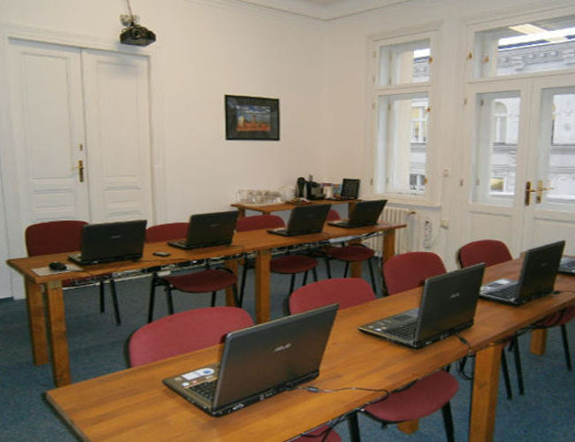

Smysl našeho bytí
Všechno v cloudu s.r.o. je technologicko vzdělávací společnost s cílem usnadnit adaptaci moderních technologií v libovolném oboru lidské činnosti. Nabízíme školení, přednášky a workshopy a to buď ve veřejně přístupných termínech (obvykle menší pracovní skupiny či jednotlivci), anebo zakázkovým školením. Dále nabízíme poradenství IT společnostem, které uvažují o přechodu do cloudu anebo ho již využívají. Budujeme automatizaci, vzorové aplikace a zaškolujeme developery, operátory a administrátory.
Veškerá poskytovaná školení a ukázky softwaru jsou vytvořená uvnitř naší společnosti, nepoužíváme žádné materiály třetích stran. Naši experti prošli všemi možnými školeními společnosti Amazon a stavíme na jejich nejlepších praktikách. Po skončení školení zůstávají studijní materiály navždy k dispozici online, k pozdějšímu použití.
Pocházíme z prostředí velkých enterprise společností, ale běžně spolupracujeme i se startupy a firmami, které nejsou primárně technologické. Koneckonců, počítače jsou dneska úplně všude a těžko si představit život a práci bez nich.
Veškerý obsah dodáváme buď v českém anebo anglickém jazyce.
Kde probíhá výuka a workshopy?
Veřejná školení a workshopy standardně probíhají v sídle společnosti Edumatik, spol. s r.o. na adrese Dlouhá 16, Praha 1. Školící prostory mají kapacitu cca 10 míst. Přestože je místnost vybavena studentskými počítači, vyžadujeme, aby si zákazník přinesl vlastní hardware s admin-root právy.
Mnoho zákazníků ale preferuje výuku přímo v sídle jejich vlastní společnosti, s čímž velice rádi vyhovíme. Jsme zvyklí cestovat a to i za hranice České Republiky. Pro případ, že není z jakéhokoliv důvodu možné se sejít osobně, můžeme školení provést online, formou webináře či v kombinaci s naším Slackovým kanálem (naše oblíbená komunikační a kolaborační platforma).
Naše zásady
- "Všechno v cloudu" bereme vážně. Pochopitelně existují případy, kdy použití cloudu nepřipadá v úvahu (operace vyžadující rychlou odezvu, dosud neschválené regulované oblasti podnikání), obecně ale stavíme na tom, že umíme převést 99% věcí do cloudu.
- Všechno serverless. Žijeme v době, kdy správa serverů v cloudu není sexy. Aplikace musí běžet v Docker kontajneru anebo rovnou server less, pomocí managed services u libovolného poskytovatele cloudu.
- Všechno transparentně, GitHub = single source of truth. Veškerá naše práce - produkty, prezentace, školení - vše je transparentně zdokumentováno na našem GitHubu. Open source je pro nás jediná cesta, jak pomáhat a vylepšovat pracovní kulturu. Chyby se nemaskujeme, ale otevřeně napravujeme.
- Všechno automaticky, DevOps by default. Naše procesy vylučují jakékoliv manuální úkony. Designujeme primárně pro plnou automatizaci a teprve později přidáme - v místech, kde to dává smysl - lidmi ovládané prvky (např. schválení změn v produkčním prostředí).
- Všechno dle nejlepších praktik. Je naším posláním od samotného zrody jakéhokoliv projektu implementovat pouze ty nejlepší praktiky. Moc dobře víme, že cloud je nestabilní a drahý, selhání prakticky nelze zabránit - a proto s ním v designu počítáme.
- Všechno bezpečně. Šifrujeme veškeré přenosy dat i jejich skladování. Námi vybudované automatické procesy se spoléhají na Vault a veškerá citlivá data důkladně oddělujeme od zdrojových kódů samotné aplikace. I pro development aplikujeme bezpečnostní pravidla určená pro produkci, vždy pracujeme v "production-like" prostředí.